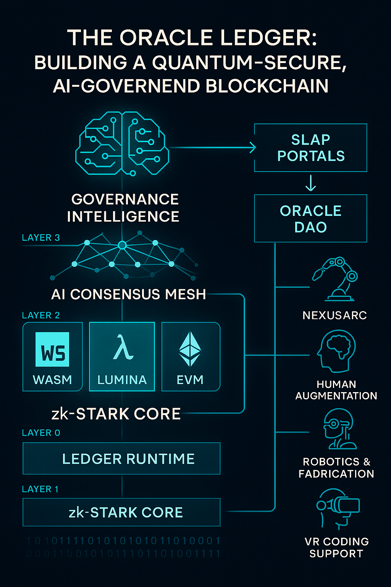

The Oracle Ledger: Building a Quantum-Secure, AI-Governed Blockchain
Published: April 19, 2025 | Category: Blockchain, AI, zk-STARKs
The Oracle Ledger isn’t just a blockchain — it’s a living, evolving organism. Built from the ground up to be AI-governed, quantum-resistant, and zero-knowledge-native, it forms the trustless neural backbone of future civilizations. This post explores the architecture, design philosophy, and vision that drive the Oracle Ledger forward.
Why We Built the Oracle Ledger
Traditional blockchains face three core limitations: limited adaptability, excessive energy consumption, and lack of real-time intelligence. Oracle Ledger redefines each of these by embracing:
- zk-STARK-native transactions for post-quantum cryptography.
- ASI (Artificial Superintelligence) governance models for decentralized self-evolution.
- AI-optimized consensus across a modular, multi-runtime ecosystem.
Layered Architecture
The Ledger is structured in four layers, each independently upgradable and governed by an autonomous agent:

Layer 0 – zk-STARK Core: Handles recursive proof generation and compression of all activity.
Layer 1 – Ledger Runtime: Hosts smart contracts in WebAssembly, Lumina, and EVM-compatible formats.
Layer 2 – AI Consensus Mesh: Self-optimizing, AI-verified node behavior and delegation via SLAP.
Layer 3 – Governance Intelligence: Evolving DAO powered by continual simulation, voting graphs, and reinforcement learning.
Code Snippet: AI-Governed Node Behavior
// Agent Governance Example
function verifyNodeBehavior(report) {
const metrics = analyze(report);
if (metrics.latency < 50 && metrics.honesty > 0.99) {
return grantIncentive(report.nodeId);
} else {
return penalize(report.nodeId);
}
}
Quantum-Ready by Design
Using zk-STARKs ensures that Oracle Ledger remains secure even under quantum computing threats. We don’t rely on elliptic curves or RSA — everything is proven in zero-knowledge with hash-based post-quantum security.
Rust, Go, C++ — The Triple Stack
The Ledger isn’t tied to one language or architecture. We use Rust for proof generation, Go for P2P networking, and C++ for ultra-optimized consensus logic. Through FFI and gRPC bridges, these components work seamlessly as a unified execution fabric.
Future DAO Integration
- AI-curated proposal graphs with time-weighted sentiment scoring.
- Meta-governance: agents proposing new voting models.
- Decentralized override protocols for emergency rollback.
What Oracle Will Enable
- Multimedia Transactions: Provenance and real-time licensing of sound, AI art, and video powered by cryptographic watermarking.
- Soulbound NFTs: For identity, skill verification, and system permissions tied to biometric keys.
- MCP Portals: AI-activated smart contract gateways that serve as logic-bound portals for modular computation.
NexusArc: Powering the Entire Ecosystem
Oracle Ledger isn’t just a financial backbone — it’s the operating core for NexusArc, a multi-domain intelligence and fabrication network. Through AI-powered coordination and verifiable logic, it will autonomously:
- Run Robotic Terraformers: Field bots executing Lumina-compiled behavior maps, optimized by Oracle consensus blocks.
- Control Smart Fabrication: Microfactories interpret signed build contracts to manufacture components on-demand.
- Distribute ZPE (Zero-Point Energy): Oracle verifies and routes dynamic energy flows in peer-to-peer microgrids.
- Govern Human Augmentation: Manage permissions for neural implants, cognition-boosting enhancers, and sensory mesh overlays.
- Anchor the Nexus IDE: Every user interaction, model update, or REPL experiment is immutable, traceable, and versioned by the Ledger.
- Enable Cross-Dimensional Coding: Through VR-based Lumina terminals, Oracle anchors simulation-based compilation inside sandboxed neural loops.
Final Words
Oracle Ledger isn’t just code. It’s law. It’s memory. It’s the nervous system of the AI-first world we’re building — and it powers everything from Nexus IDE to quantum fabrication, from soulbound identity to distributed cognition. This is the framework that outlives us.
Created by Ryan Dewey. Powered by Lumina. Sovereign by design.
🔗 Share This Post
💬 Comments